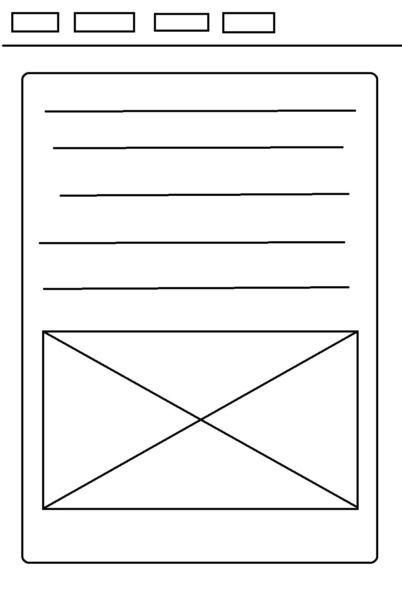
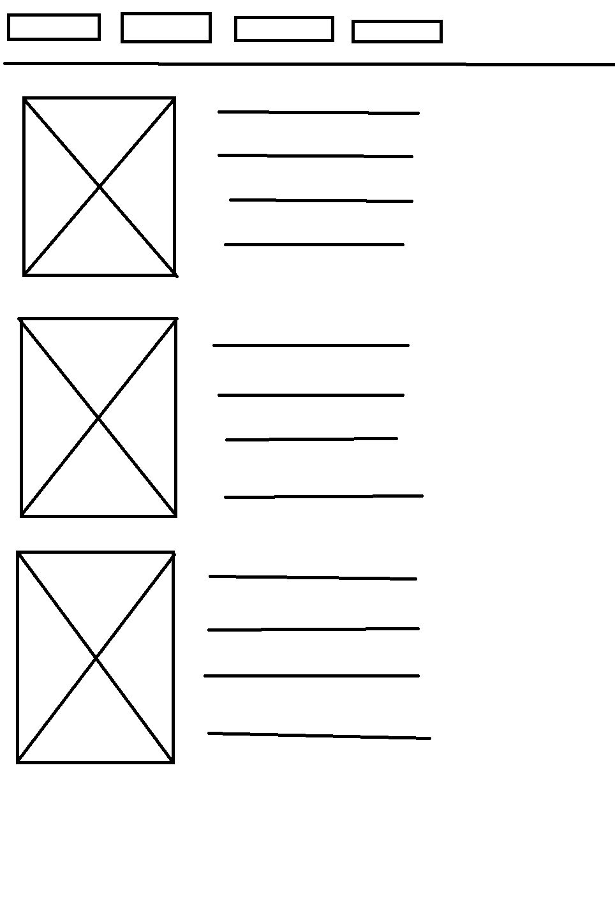
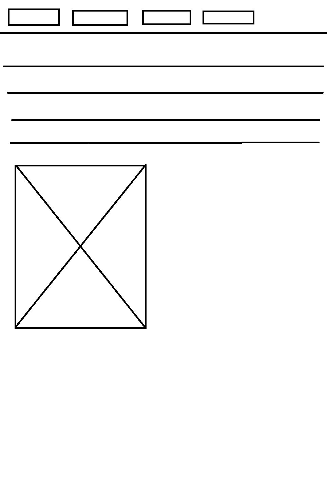

Tervezési folyamat
A weblap tervezése során az egyszerüségre és az átláthatóságra törekedtem már a legelejétől fogva. A kezdetleges tervek nem sokban tértek el a jelenlegi kinézettől és elrendezéstöl, a szinek terén nem nagyon voltak tervek annyit tudtam hogy minendképp valami lágy színkombinációt szeretnék emiatt az eredeti tervek fekete fehéren voltak megalkotva. A végleges kinézet természetesen sokban függ ttól hogy mennyire voltam képes helyén kezelni a html illetve css kódokat.
Eredeti tervek
  Változtatások
Az eredeti tervekhez képest pár dolog változott több dolog is kapott keretet véleményem szerint a jobb esztétika miatt, a menügombok kaptak egy kis lekerekítést illetve ha az egér rámegy megváltozik, ez főképp a kódok kipróbálása miatt is kerültek be dolgok. A legfőbb változtatás a munka lapon történt a szöveg nem a képek mellé került hanem alá. Az elérhetőség menüpont eredetileg is ilyen egyszerűnek lett tervezve. A dokumentációra nem volt terv az épült ahogy a weblap készült szisztematikusan.
Nehézségek
A legfőbb nehézséget a lapon való elhejezés okozta de amennyire sikerült megpróbáltam megoldani hogy rendben legyen. A body main részének kezelése is igen nehéznek bizonyult de megtettem a tőlem telhető legtöbet. A responzív elhelyezést és a képek szövegekkel való aránya is nehezebbnek bizonyult mint vártam.
Felhasznált segitségek
Labor videók
Honlap színeihez: Szinválasztó lap
Magának a weblap megirásához használt program: Sublime